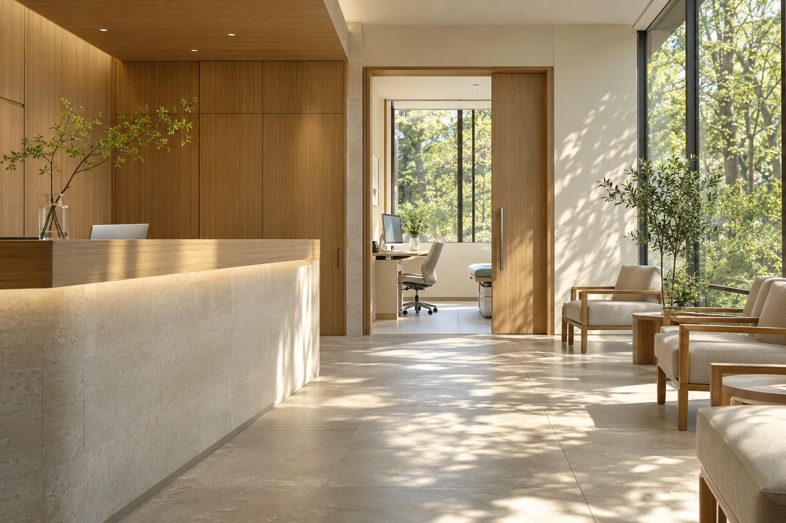

現場の課題を整理
体制・募集背景・必要な役割を伺います。
FOR MEDICAL FACILITIES（架空サービスの構成案）
「どんな人が必要か」から、一緒に考える採用相談。
採用について相談する ↗
必要な職種、勤務体制、現場が大切にしていること。
採用の背景を整理し、医療従事者に伝わる募集へつなげます。
体制・募集背景・必要な役割を伺います。
働き方や求める経験を整理します。
双方の希望を確認しながら進めます。
上記は支援フローの構成案です。実際のサービス範囲・料金は運営方針確定後に掲載します。